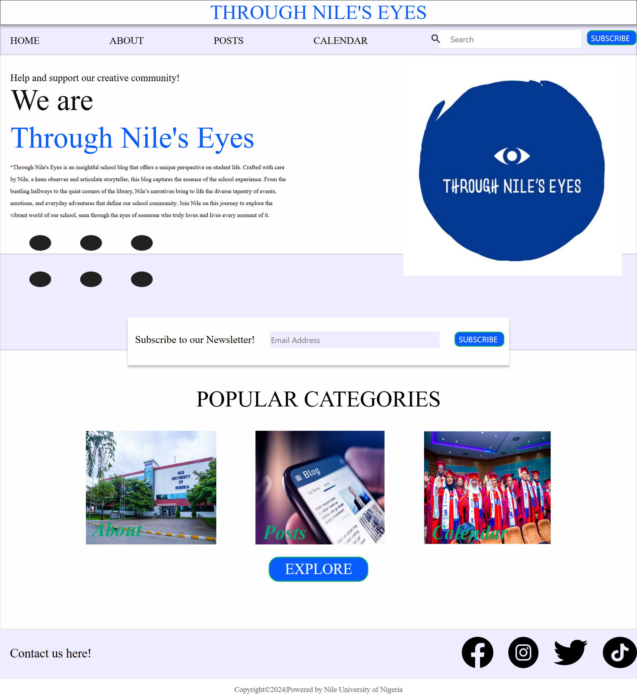
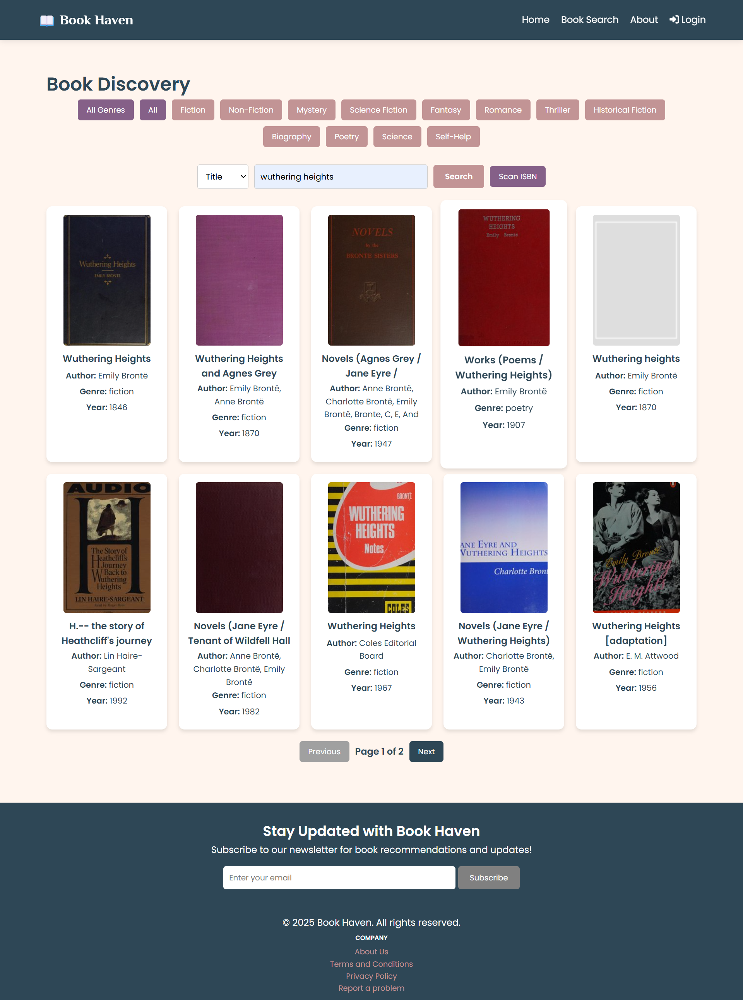
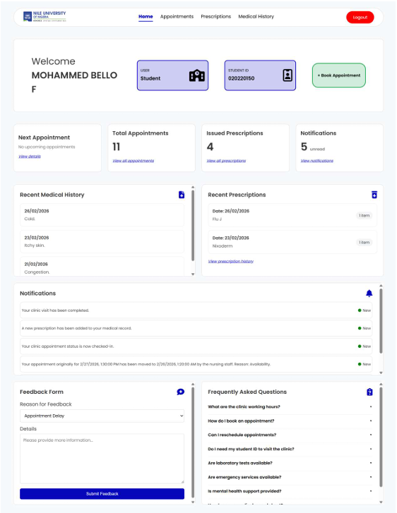

Through Nile’s Eyes is a comprehensive and visually engaging blog website developed as an academic project during my second year at Nile University of Nigeria. Designed to serve as a central storytelling platform for the university community, this website captures and presents the diverse experiences, events, and student life at Nile University through creative narratives and multimedia content.
The site features a modern and user-friendly interface, with key sections such as About, Posts, and Calendar—each dedicated to showcasing various facets of campus life. A built-in newsletter subscription module promotes community engagement, while integrated social media links ensure seamless connectivity with broader audiences. The homepage highlights curated categories and visual content to draw users into the vibrant culture of the institution.
This project demonstrates my ability to conceptualize, design, and implement a functional and responsive blog platform using HTML, CSS, and relevant front-end technologies. It reflects not only technical proficiency but also an understanding of user experience, branding, and content organization tailored to an academic environment.
Book Haven is a dynamic, full-stack web application developed as a third-year university project, designed to provide users with a seamless platform for discovering and engaging with books from around the world. Leveraging the Open Library API, the application enables real-time search functionality, allowing users to look up any book by title, author, or ISBN. The interface displays detailed metadata such as author, genre, publication year, and book covers, offering a visually rich and informative browsing experience. Users can filter search results by genre, access multiple editions, and explore curated literary categories.
A key feature of Book Haven is its user interaction capabilities. Registered users can log in securely to leave reviews, submit ratings, and track their reading activity. This interactive layer fosters a sense of community while supporting personalized user experiences.
Built using Flask (a Python web framework), the application integrates essential dependencies such as Jinja2 for templating, SQLAlchemy for database management, and Flask-Login for secure authentication. All backend operations are efficiently handled to ensure smooth data flow and responsiveness across all user actions. This project exemplifies my ability to build scalable, user-focused web solutions with a practical application in the real world of digital libraries and book communities.


The Nile University Clinic Management System is a web-based healthcare management platform developed as my undergraduate final-year project at Nile University of Nigeria. Designed to improve the efficiency of the university’s healthcare services, the system provides a centralised platform for managing patient information, clinic appointments, medical records and clinical activities within the university’s medical centre.
The system features role-based access for students, staff, nurses, doctors, administrators and pharmacists, with dedicated functionalities tailored to their respective responsibilities. Key features include appointment scheduling, electronic patient records, patient triage, medical consultations and clinical reporting. By streamlining the flow of information between healthcare personnel, the platform aims to improve record management, support clinical workflows and facilitate more effective coordination of healthcare services.
This project demonstrates my ability to analyse requirements, design and implement a functional healthcare management system using HTML, CSS, JavaScript, Node.js, Express.js and MongoDB. It also involved examining existing clinic workflows, identifying operational challenges and applying software engineering principles to develop a practical solution. Particular attention was given to data security, role-based access control and the protection of sensitive patient information
Hi, I’m Tamara, a passionate and detail-oriented developer with a love for crafting intuitive, user-centered digital experiences. My journey into tech began with curiosity and has grown into a deep appreciation for how design and functionality come together to solve real-world problems.
I specialize in front-end development, where I bring ideas to life through clean code, thoughtful design, and responsive interfaces. I enjoy working with modern web technologies like HTML, CSS, JavaScript, and frameworks like React or Flask, and I’m always excited to learn something new. Whether it’s building dynamic web apps, collaborating on team projects, or experimenting with personal ideas, I bring creativity, adaptability, and a strong problem-solving mindset to everything I do.
Outside of coding, you can usually find me exploring tech tutorials,
bingeing a good series, reading about design trends, obsessing over books or
brainstorming the next side project. I believe in continuous learning,
sharing knowledge, and using tech as a tool to make life a little easier
—and a lot more fun.
Let’s connect, collaborate, and build something meaningful together!